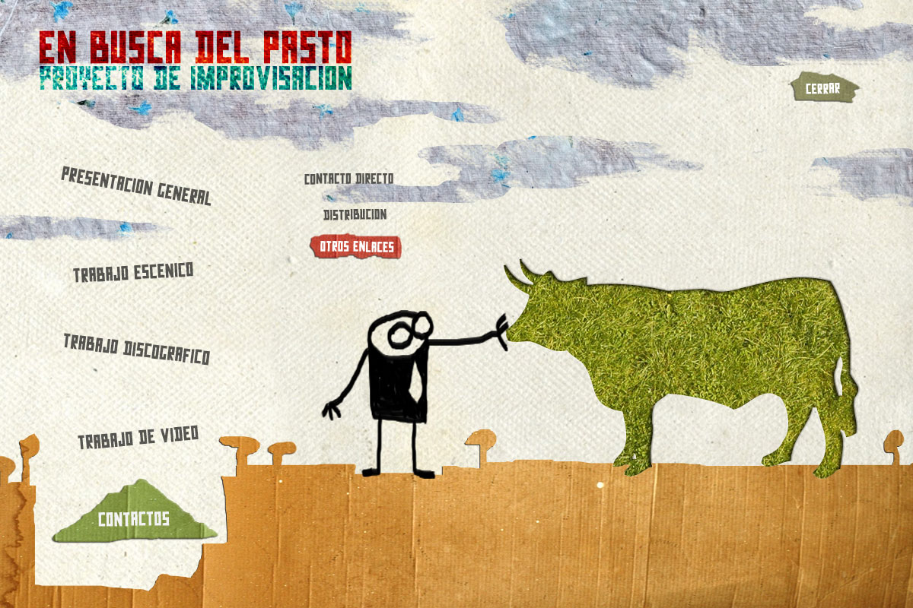

MySpace:
www.myspace.com/enbuscadelpasto
Licencia Creative Commons
http://creativecommons.org/licenses/by-sa/3.0
2010. EN BUSCA DEL PASTO. Todos los contenidos de esta web están bajo licencia "by-sa 3.0" de